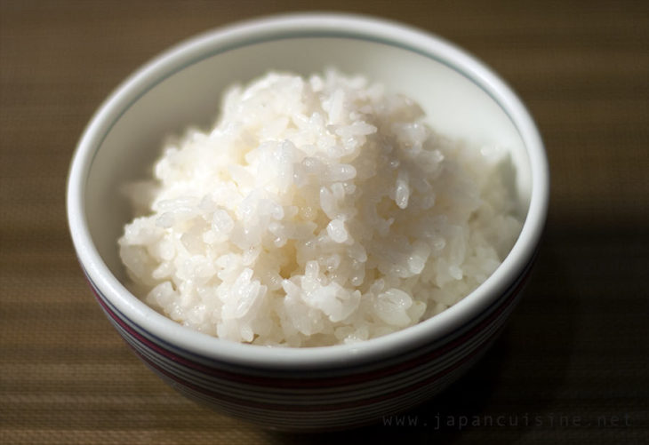

Gohan

Description
Few dishes can beat a steamy bowl of gohan rice, considering what little effort it takes to whip up
Ingredients
Steps
- Run water thorugh the rice to remove excess starch until it gets clearer
- Put the rice in the rice cooker pot and fill with water up to the mark, according with the amount of rice
- Start the rice cooker, wait until it stops working